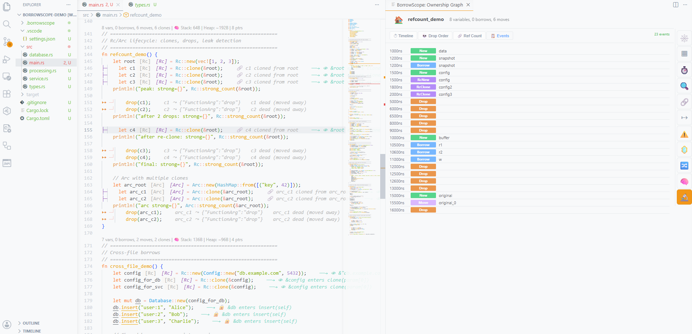

The most novel aspect of borrowscope-vscode is its ability to combine two fundamentally different sources of ownership information: static analysis from the LSP server (which sees all paths but no runtime values) and dynamic observation from borrowscope-runtime (which sees one path with precise timing and counts). The merge layer correlates these two views, produces a unified representation, and detects divergences where they disagree. This section describes the merge architecture, the correlation algorithm, and the 9 divergence kinds that the system can detect.
Static analysis and runtime observation answer different questions. The LSP server can tell you that a variable could be moved (because there is a move expression in the code), but it cannot tell you whether the move actually happened in a given execution (the move might be inside an if branch that was not taken). The runtime can tell you that an Rc's strong count reached 3 and never went back to 0, but it cannot tell you why (the static analysis can identify the clone sites and suggest where to break the cycle).
The merge problem has three sub-problems. First, correlation: matching runtime variable IDs (e.g., "data_0") to static variable declarations (e.g., data: Vec<i32> at line 5). Second, aggregation: computing summary statistics from the raw event stream (lifetime duration, borrow count, ref count peak, drop order). Third, divergence detection: identifying cases where the static prediction and runtime observation disagree in a meaningful way.
The merge is performed entirely within the extension (not on the LSP server), because it requires access to both data sources simultaneously. The LSP server has no knowledge of runtime events, and the runtime has no knowledge of static analysis results. The extension is the only component that sees both, making it the natural location for the merge logic.
The output of the merge is a MergedVariable[] array. Each entry represents one variable and contains four sections: identity (name, var_id, line, file), static information (type, ownership category, is_copy), runtime information (lifetime, borrow counts, ref counts, drop order, await crossings, unsafe accesses), and agreement status (match, diverge, runtime_only, or static_only).
export interface MergedVariable { name: string; var_id: string | null; line: number; file: string | null; static_info: { type_display: string; ownership_category: string; is_copy: boolean; } | null; runtime_info: RuntimeInfo | null; agreement: "match" | "diverge" | "runtime_only" | "static_only"; divergences: Divergence[]; }
The RuntimeInfo structure captures everything observable about a variable's runtime behavior: actual lifetime in nanoseconds, number of shared and mutable borrows observed, whether it was actually moved (and where), its position in the global drop sequence, peak and final reference counts (for Rc/Arc), clone count, await crossings (borrows held across await points), unsafe access count, and total event count. This is a superset of what static analysis can predict, because it includes timing, counts, and path-specific behavior.
export interface RuntimeInfo { actual_lifetime_ns: number; // Drop timestamp - New timestamp (-1 if not dropped) actual_borrow_count: number; // total Borrow events referencing this var actual_mut_borrow_count: number; // mutable borrows only was_actually_moved: boolean; // Move event with from_id = this var move_destination: string | null; // to_name if moved drop_order: number; // position in global drop sequence (-1 if not dropped) drop_timestamp: number; // timestamp of Drop event ref_count_peak: number; // max strong_count for Rc/Arc ref_count_final: number; // last known strong_count weak_count_peak: number; // max weak_count clone_count: number; // number of RcClone/ArcClone from this source await_crossings: AwaitCrossing[]; // borrows held across await points unsafe_accesses: number; // times accessed in unsafe blocks event_count: number; // total events for this var }
The runtime produces a JSON array of events, each tagged with a type name and containing a timestamp plus type-specific fields. The extension supports all 88 event types defined by borrowscope-runtime. Events are loaded either from a file (.borrowscope/events.json, watched for changes) or from a WebSocket connection (for live streaming during execution).
Processing happens in three stages. First, parsing: the raw JSON is validated and typed using the RuntimeEvent union type. The parser handles both internally-tagged format ({ "type": "New", "var_name": "x", ... }) and externally-tagged format ({ "New": { "var_name": "x", ... } }) for compatibility with different serialization modes. Second, filtering: events are filtered by file path (only events from the currently active file are processed) and by relevance (only ownership-related events are used for the merge; control flow events like LoopIteration are skipped). Third, mapping: runtime variable IDs are correlated with static variable declarations using the mapVariables() function, which matches by variable name and declaration line.
// Build runtime info from a mapped variable's events function buildRuntimeInfo(mapped: MappedVariable, allEvents: RuntimeEvent[]): RuntimeInfo { let createTimestamp = 0, dropTimestamp = -1; let borrowCount = 0, mutBorrowCount = 0; let wasMoved = false, refCountPeak = 0, cloneCount = 0; for (const event of mapped.events) { const type = eventType(event); const data = eventData(event); switch (type) { case "New": case "RcNew": case "ArcNew": createTimestamp = data.timestamp; refCountPeak = Math.max(refCountPeak, data.strong_count || 1); break; case "Drop": dropTimestamp = data.timestamp; break; case "Borrow": borrowCount++; if (data.mutable) mutBorrowCount++; break; case "Move": if (data.from_id === mapped.var_id) { wasMoved = true; } break; case "RcClone": case "ArcClone": cloneCount++; refCountPeak = Math.max(refCountPeak, data.strong_count); break; } } return { actual_lifetime_ns: dropTimestamp >= 0 ? dropTimestamp - createTimestamp : -1, actual_borrow_count: borrowCount, was_actually_moved: wasMoved, drop_order: dropOrder.get(mapped.var_id) ?? -1, ref_count_peak: refCountPeak, clone_count: cloneCount, // ... remaining fields }; }
The most valuable output of the merge is divergence detection: identifying cases where static analysis and runtime observation disagree. Each divergence has a kind (categorizing the type of disagreement), a severity (info, warning, or error), a description (human-readable explanation), a suggestion (actionable fix), and runtime evidence (the specific observations that triggered the detection). The extension detects 9 kinds of divergences:
| Kind | Severity | Condition | Meaning |
|---|---|---|---|
rc_leak |
Error | Rc/Arc never dropped, final ref_count > 0 | Memory leak: the reference-counted value will never be freed |
rc_cycle |
Error | Rc ref count went up (2+ clones), never reached 0 | Reference cycle: mutual Rc references prevent deallocation |
missing_drop |
Warning | Non-Copy, non-moved, never dropped | Possible leak via std::mem::forget or program exit before scope end |
async_borrow_held |
Warning | Borrow active during AwaitStart event | Borrow held across await point (may prevent Send) |
unsafe_hidden |
Info | Unsafe accesses on a non-RawPointer variable | Static analysis may be incomplete due to unsafe code |
conditional_move |
Info | Owned, non-Copy, never moved, never borrowed, dropped normally | A move expression exists in code but the branch was not taken |
weak_upgrade_fail |
Warning | WeakUpgrade event with success=false | Weak::upgrade returned None (the strong reference was already dropped) |
channel_recv_fail |
Warning | ChannelRecv event with success=false | Channel receive failed because the sender was dropped |
use_after_move |
Error | Events with this var_id after a Move from it | Should not happen in safe Rust; indicates unsafe code or instrumentation error |
export function detectAllDivergences(merged: MergedVariable, allEvents: RuntimeEvent[]): DetailedDivergence[] { const divergences: DetailedDivergence[] = []; const s = merged.static_info; const r = merged.runtime_info; if (!r) return divergences; // 1. Rc/Arc leak if (s && (s.ownership_category === "Rc" || s.ownership_category === "Arc") && r.drop_timestamp < 0 && r.ref_count_final > 0) { divergences.push({ kind: "rc_leak", severity: "error", description: `${s.ownership_category} never dropped (final ref count: ${r.ref_count_final})`, suggestion: "Check for reference cycles. Consider using Weak references.", runtime_evidence: `Created with ref_count=1, peaked at ${r.ref_count_peak}, never reached 0`, }); } // 2. Async borrow held across await if (r.await_crossings.length > 0) { divergences.push({ kind: "async_borrow_held", severity: "warning", description: `Borrow held across ${r.await_crossings.length} await point(s)`, suggestion: "Consider cloning before the await or restructuring to drop the borrow first.", runtime_evidence: r.await_crossings.map(c => `await at line ${c.await_line}`).join("; "), }); } // ... 7 more divergence checks return divergences; }
Detected divergences are surfaced to the developer through multiple channels. In the inline decorations (Section 3.5), divergences appear as colored highlights on the affected variable's declaration line: yellow background for warnings, red background for errors, with a text annotation describing the divergence. In the runtime status bar, a badge shows the total divergence count with color coding (green for 0, yellow for warnings only, red if any errors).
In the WebView panel's Runtime view (Section 4.13), divergences are shown in the event log with severity badges and expandable detail sections. Each divergence entry shows the kind, description, suggestion, and runtime evidence. The developer can click a divergence to navigate to the affected variable's source line. The panel also provides a summary function (analyzeDivergences()) that aggregates divergences across all merged variables, producing counts by kind and by severity for the status bar display.
The divergence system is designed to be actionable rather than noisy. Info-level divergences (conditional_move, unsafe_hidden) are shown only in the detailed panel view, not as inline highlights. Warning-level divergences (missing_drop, async_borrow_held, weak_upgrade_fail, channel_recv_fail) appear as subtle yellow highlights. Only error-level divergences (rc_leak, rc_cycle, use_after_move) produce prominent red highlights, because these indicate genuine bugs (memory leaks, undefined behavior) rather than expected runtime variation.

Figure: Divergence visualization showing runtime event timeline with variable lifetimes and drop order